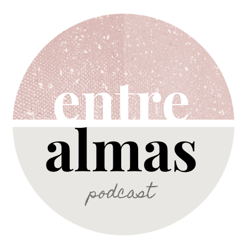

Episodios
¡A continuación encontrarás nuestros episodios! Cada episodio fue creado para ayudarte en tu propio viaje espiritual. Esperamos que este podcast lo ayude a aumentar su propia vibración, conciencia y mejorar su vida. Nuestro objetivo es abrir un nuevo mundo de posibilidades y descubrir nuevas herramientas.
¡Trabajando por la evolución de la unidad subconsciente!